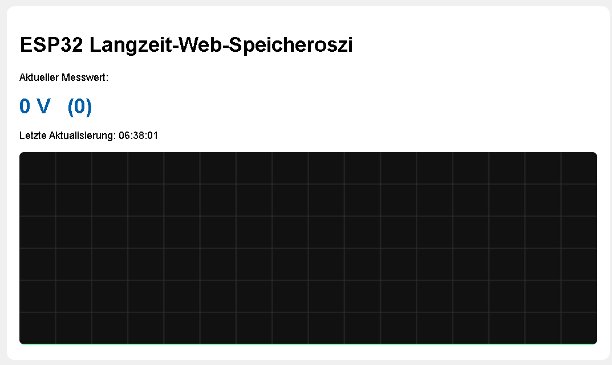

ESP32 - analoges Langzeitspeicheroszilloskop
Dateien für ESP32
ESP32-WEB-Speicheroszi-1.py
Ausgangsversion -
falsche Datei
weitere Versionen ...
in Arbeit / Präsentationsversion

in Arbeit: Bilder erstellen
in Arbeit: Bilder erstellen